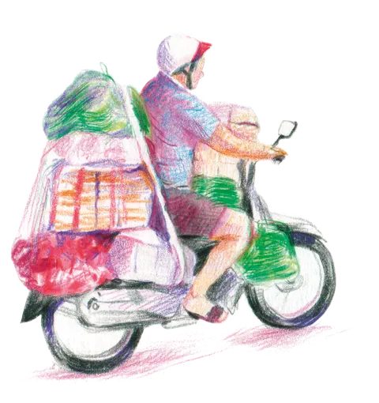
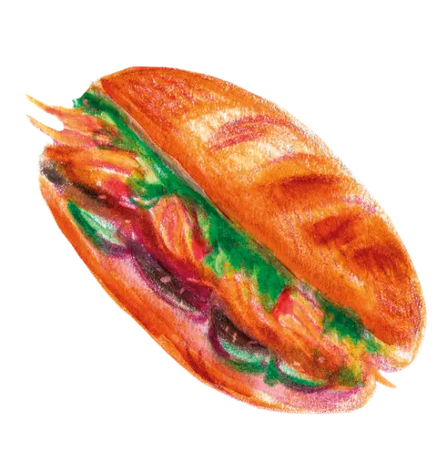
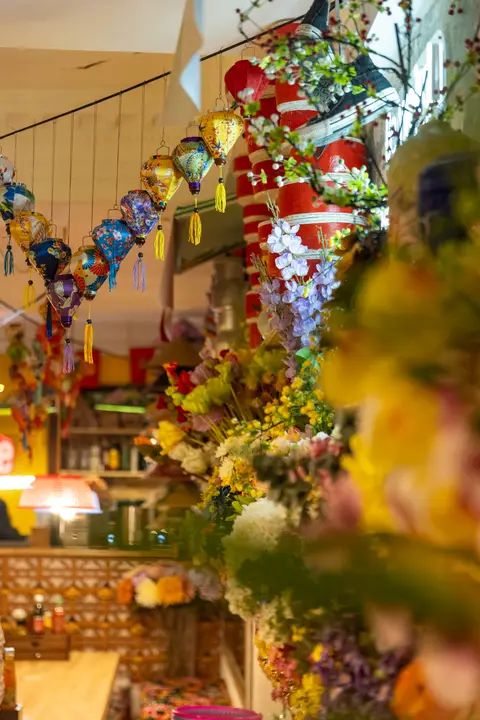
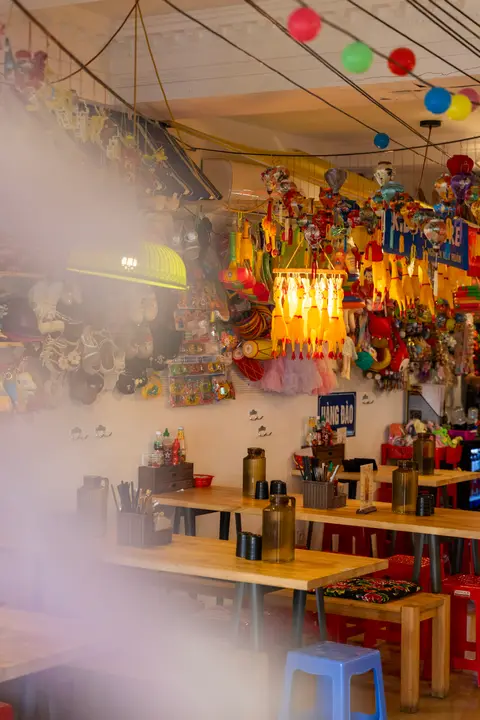

Chợ Vỉa Hè — phở bún chả ệ ộ ữ ơ đ Đ
pg. 02
Le test typo vietnamien
Section critique. Le vietnamien empile les diacritiques (ợ ộ ữ ơ đ). Beaucoup de polices display ne portent pas le sous-ensemble vietnamien : le glyphe tombe alors sur un fallback visible et moche. Regardez le rendu réel de la phrase test sur chaque police, ici, en vrai.
Phrase test : Chợ Vỉa Hè — phở bún chả ệ ộ ữ ơ đ Đ
Chợ Vỉa Hè — phở bún chả ệ ộ ữ ơ đ Đ
Chợ Vỉa Hè — phở bún chả ệ ộ ữ ơ đ Đ
Chợ Vỉa Hè — phở bún chả ệ ộ ữ ơ đ Đ
Chợ Vỉa Hè — phở bún chả ệ ộ ữ ơ đ Đ
Chợ Vỉa Hè — phở bún chả ệ ộ ữ ơ đ Đ
pg. 03
La palette
Des taches d'aquarelle, pas des carrés froids. Trois familles : le papier qui porte tout, les encres d'Oriane, et les éclats du lieu — rares et précieux.
Papier & encre 70 %
La base. Le papier porte 70 % de chaque écran ; on respire dessus, le texte à l'encre par-dessus.
#F7F2E9#EFE6D6#1E1A17Encres d'illustration 25 %
Les couleurs d'Oriane. Elles vivent dans les dessins et les titres — jamais en aplats plein écran.
#C0264B#E9531F#1E6E8C#2E7D32Éclats du lieu 5 %
Rares, donc forts. Le jaune néon = CTA et éclats. Le rouge néon = glow décoratif uniquement, jamais en texte.
#F2B300#E4002BRègles de contraste (AA) : texte encre sur jaune — jamais blanc sur jaune. Framboise réservée aux titres, sur papier.
pg. 04
Les illustrations d'Oriane, sur le papier
Le fond blanc de chaque dessin se fond dans le papier : rien à détourer. Légendes manuscrites, numéros de page en coin — comme un vrai carnet.




pg. 06
Signatures motion démos live
Trois gestes qui donneront le ton. Tout est désactivé sous prefers-reduced-motion : la page reste lisible et calme pour qui le demande.
a. Le trait de crayon
Un séparateur qui se dessine quand il entre à l'écran (IntersectionObserver + stroke-dashoffset, pas de GSAP).
scrolle vers ce bloc pour le voir se tracer ↑
b. La tache d'aquarelle au hover
Le CTA principal — encre sur jaune. Autour, des liens dont le souligné se dessine et une tache colorée douce éclot derrière.
Passez sur la carte, notre histoire, le lieu — le souligné se trace et une tache éclot.
c. Le respect du calme
Sous prefers-reduced-motion: reduce, tous les tracés apparaissent d'emblée, les taches sont statiques, aucun mouvement. Aucune information n'est portée par la seule animation.
Réglage système actuel : détection…
pg. 07
…et le lieu, lui,
ne chuchote pas.
Papier calme, puis l'éclat. Voilà tout le contraste que le site doit produire : on tourne une page de carnet, et le marché explose.


pg. 08
Ce qu'on regarde
Références, lues à travers notre filtre : ce qu'on prend, ce qu'on évite. Notre équilibre : papier calme + éclats.
-
Dishoom dishoom.com
On prend le storytelling famille / héritage comme colonne vertébrale — chaque resto raconte une histoire vraie.
-
BAO London baolondon.com
On prend les illustrations naïves comme identité totale, un monde cohérent.
On évite la froideur minimale.
-
Big Mamma bigmammagroup.com
On prend l'énergie joyeuse assumée.
On évite le chaos permanent — nous = papier calme + éclats.
-
Omsom omsom.com
On prend la fierté des couleurs saturées asiatiques.
On évite le tout-néon permanent.
-
Vivier continu
On surveille landing.love & la catégorie food d'Awwwards — pour nourrir les itérations au fil de l'eau.